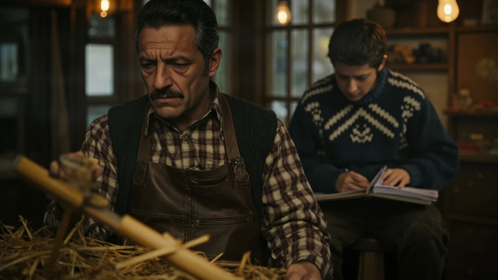
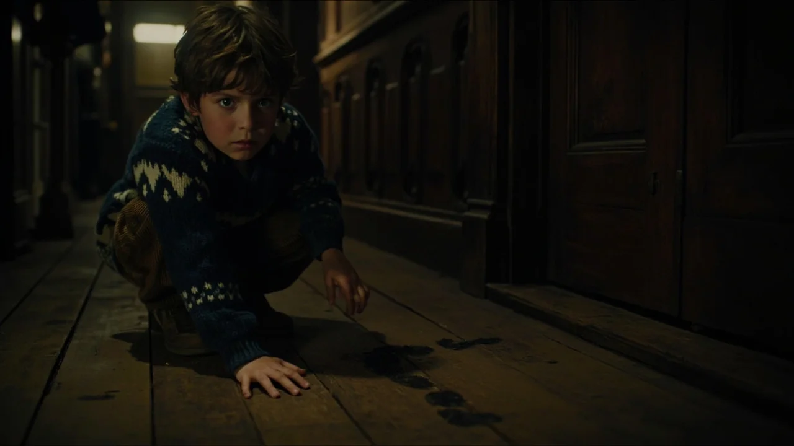
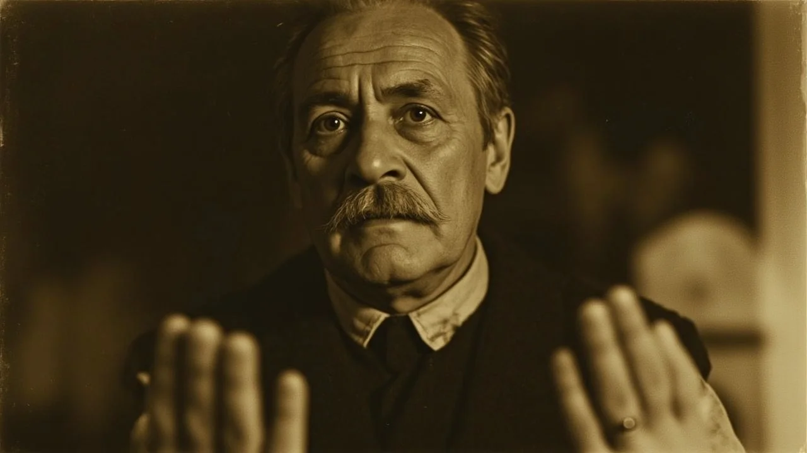
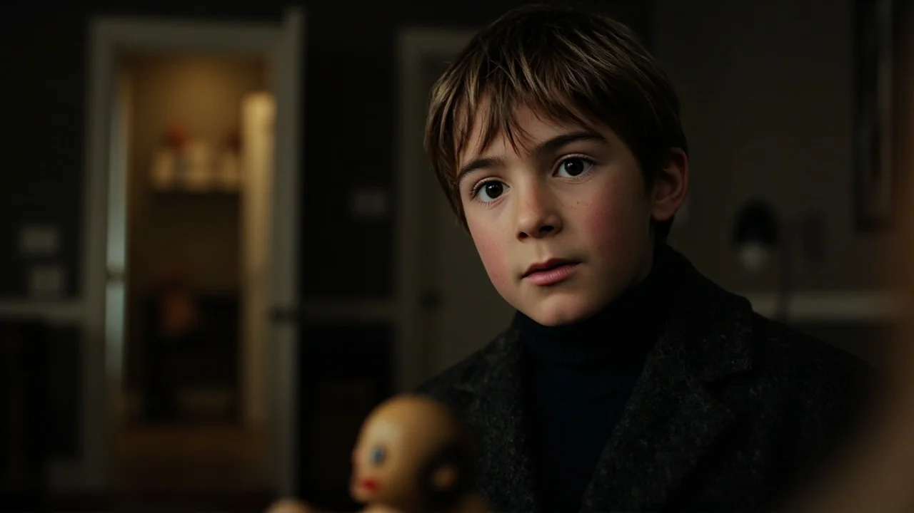
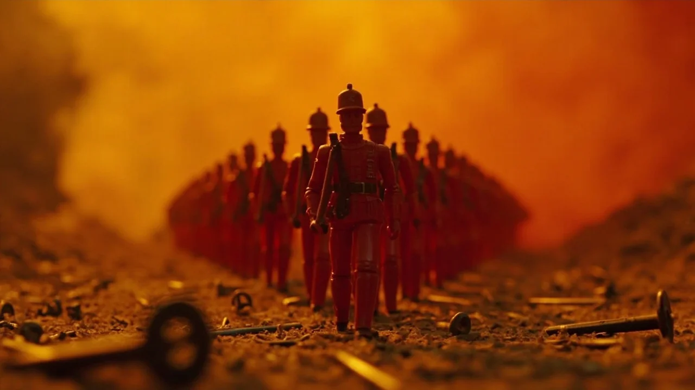

El furgón de reparto frenó sobre el aguanieve a las cinco de la tarde. El conductor dejó una caja de pino sin cepillar sobre el mostrador de cinc y se marchó sin pedir firma ni entregar albarán. Olía a humedad vieja y a madera guardada durante décadas en un desván. Ernesto limpió las virutas de paja con la manga del cárdigan. Nico, sentado en el taburete del rincón con los cuadernos del colegio, levantó la vista al oír el crujido de la palanca de hierro. Bajo la arpillera aparecieron doce soldados de tilo. Medían apenas quince centímetros, vestidos con levitas rojas de gala, botones dorados diminutos y altos chacós oscuros. Eran figuras de madera labradas con maestría artesanal, muy distintas a los juguetes de molde o las piezas de hojalata que llenaban los grandes almacenes ese invierno de 1998. Cada uno tenía una cara distinta: arrugas talladas con gubia fina, ojos de pupila diminuta pintados a pulso y bocas entreabiertas. Atada a la peana de cada figura colgaba una etiqueta de cartulina amarillenta con un nombre escrito en tinta sepia. —Son piezas de maestro —dijo Ernesto, pasando el pulgar por el relieve de una bayoneta—. Algún coleccionista las habrá mandado para tasar y se han equivocado de dirección. O tal vez sea género antiguo de mi padre. —Tienen cara de enfado, papá —susurró Nico. —Tienen cara de soldados, que es distinto. Los pondremos en el centro del escaparate. Con este temporal, el rojo llamará a los rezagados de Nochebuena. Ernesto los colocó en fila sobre la repisa de fieltro verde, entre un tren de vapor y las muñecas de porcelana. Cerró la tienda a las ocho. Apagó los fluorescentes y subieron al piso superior a cenar sopa de fideos en silencio. A las dos de la madrugada, un chirrido de frenos despertó a Nico. Bajó en calcetines por la escalera de caracol de la trastienda, alumbrándose con la linterna. La juguetería estaba en penumbra, recortada por la farola de la calle a través del cristal. Nico enfocó la repisa. El tercer soldado de la izquierda ya no miraba al frente. Había girado sobre su peana y sostenía el diminuto mosquetón encañonado hacia el cristal, alineando el punto de mira con el primer piso de enfrente: la ventana de don Casimiro, el administrador jubilado.
El timbre de la puerta no sonó por un cliente. Lo aporreó el sereno a las ocho de la mañana mientras una ambulancia aparcaba con las luces azules barriendo la fachada. Don Casimiro había fallecido durante la noche. Los sanitarios sacaron la camilla cubierta por una lona gris; según los vecinos que cuchicheaban en la acera, el viejo se había desplomado frente al balcón con las manos aferradas a las cortinas, víctima de un infarto repentino. Nico observó la escena tras los cristales empañados. Su padre, pálido, bajó la persiana metálica hasta la mitad. —Vuelven a su caja —dijo Ernesto con voz ronca—. No quiero muñecos apuntando a la calle. Nico contó las figuras sobre la mesa de trabajo de la trastienda. Faltaba una. —Papá, solo hay once. El que apuntaba a la ventana de don Casimiro no está. Ernesto rebuscó entre el fieltro, detrás del tren de latón y bajo los estantes. Nada. En la repisa, justo donde había estado apoyada la peana del tercer soldado, descubrieron dos marcas diminutas de barro seco y un rastro de partículas negras, como polvo de carbón. Los puntos continuaban por el rodapié y doblaban hacia el pasillo de servicio, perdiéndose bajo la rendija de la puerta trasera que daba al callejón. —Se te habrá caído al barrer —dijo Ernesto, frotándose la nuca—. O se coló algún crío mientras abría la verja. Deja de mirar las marcas, Nico. —El barro está fresco, papá. Y la puerta trasera tiene el cerrojo echado por dentro. Ernesto no contestó. Guardó los once soldados en la caja de madera, cerró la tapa con brusquedad y la metió en el fondo del armario de herramientas, bajo los candados que no se abrían desde la muerte de su mujer.

Dos días después, los soldados ya no estaban en el armario. Nico los encontró al bajar a abrir la tienda el veintidós de diciembre. Tres de ellos permanecían sobre la báscula de paquetes junto al mostrador. Dos forcejeaban en una postura imposible para figuras de madera rígida: uno sujetaba al otro por el cuello de la levita, mientras el tercero yacía volcado boca abajo contra el platillo de bronce. A mediodía, un altercado estalló en la taberna contigua. Dos transportistas se enzarzaron a golpes; uno rodó por los adoquines con una brecha en la frente y el agresor huyó antes de que llegara la policía. Aquella misma tarde, otra figura apareció sobre el cuadro eléctrico de la trastienda con una cerilla quemada entre sus dedos barnizados. Horas después, los cables del obrador de la panadería prendieron fuego, llenando la calle de humo denso y sirenas. —Te lo dije, papá —insistió Nico junto a la estufa de queroseno—. No son juguetes normales. Cada vez que cambian de postura, ocurre una desgracia en el barrio. Ernesto arrojó una llave inglesa sobre la mesa con un golpe seco. —¡Basta ya, Nicolás! —gritó con los ojos enrojecidos—. Tengo letras que pagar antes de fin de año y el almacén lleno de género invendible. La gente solo compra muñecos a pilas en las grandes superficies. Si los vecinos te oyen decir esas locuras, nos señalarán por la calle. ¡Sube al cuarto! Nico esperó a que su padre saliera a por tabaco y regresó a la trastienda con la linterna. En el estante más alto, detrás de botes de barniz cubiertos de telarañas, reposaba uno de los soldados. Sostenía entre sus brazos de madera un pequeño marco ovalado de plata. Al enfocarlo, a Nico se le encogió el pecho. Dentro del marco estaba la fotografía de su madre, Elena, tomada dos veranos antes de enfermar. El soldado la miraba fijamente con sus ojos pintados, y en su etiqueta de cartulina descolorida no figuraba ningún apellido ajeno: la tinta sepia dibujaba el nombre «E-L-E-N-A».

El altillo de la juguetería conservaba el polvo acumulado de tres generaciones. Nico trepó por la escalerilla esquivando cajas apiladas hasta las vigas de castaño. Buscó entre los archivadores metálicos hasta dar con las carpetas negras donde guardaban las escrituras y los recortes antiguos. Bajo un legajo de facturas de 1945 encontró una portada amarilleada de la gaceta provincial: «Tragedia en la noche festiva: seis aprendices perecen en el incendio del taller Beltrán». El artículo narraba los hechos con crudeza. En la Nochebuena de 1944, durante disturbios y saqueos callejeros, el taller original ardió por completo. El maestro artesano, Julián Beltrán —abuelo de Ernesto y bisabuelo de Nico—, había atrancado los portones exteriores con cadenas para impedir que la multitud saqueara sus moldes de madera tallada. Cuando un petardo prendió en el cobertizo de serrín, las llamas atraparon a los seis aprendices del turno de noche tras los cerrojos. Julián Beltrán fue absuelto por falta de pruebas, pero el barrio lo condenó al desprecio general. Durante los meses siguientes, el artesano se encerró en una caseta a las afueras y talló doce soldados con los rostros y nombres exactos de los peritos, jueces y socios que lo habían encubierto o presionado. Una última anotación en el reverso del recorte heló la sangre de Nico: «Doce pagaron con fuego la culpa que la justicia calló. El último cerrará el linaje cuando la sangre reclame su propia madera». Nico bajó del altillo con las piernas temblorosas y corrió a la caja de madera de la trastienda. La volcó sobre el serrín del suelo. Nueve soldados habían desaparecido ya. Solo quedaban dos. Uno llevaba la etiqueta de su madre. El otro, en el fondo, vestía levita oscura y tenía la cabeza alzada. Nico le dio la vuelta con dedos torpes. La etiqueta de cartulina colgaba en blanco. Pero las facciones no eran las de un militar antiguo: los pómulos anchos, la nariz respingona y el remolino en el pelo castaño eran idénticos a su propio reflejo en el espejo.
La tarde de Nochebuena cayó sobre la ciudad con una nevada pesada. El viento azotaba el rótulo de chapa con un quejido metálico. En la trastienda, la figura hueca de uno de los soldados caídos reveló el último secreto: al desenroscar la peana, Nico extrajo un rollo de papel encerado con la advertencia final de su bisabuelo: «La madera que no tiene nombre devora al que lleva su rostro antes de que las doce campanas doblen en Navidad. Si el muñeco arde en el fuego de la forja, el nudo se deshace. Si toca la sangre, el taller se cobrará a su dueño». Eran las once y veinte de la noche. Nico tomó el soldado con su rostro y caminó hacia el horno de secado de piezas en la pared trasera del taller. La boca de hierro fundido conservaba carbón seco en la rejilla. Nico sacó una caja de cerillas. Un chasquido seco resonó en el pasillo. Sobre las estanterías de juguetes, las sombras se alargaron. Desde lo alto de los muebles, los pasos de madera repiquetearon contra las baldas como granizo. Las figuras bajaban erguidas por los cordones de las cortinas, rodeando los expositores con sus diminutos mosquetones alzados. La cancela de la calle se abrió de golpe. Ernesto entró cubierto de nieve. Al ver la trastienda a oscuras y a su hijo con la cerilla frente al horno, dio un paso adelante. —¡Nico, apártate de ahí! Un soldado saltó desde un estante, cayendo sobre el hombro de Ernesto. La diminuta bayoneta arañó el cuello del hombre, abriendo un corte fino del que brotó sangre oscura. Ernesto soltó un grito y derribó una caja de clavos al tambalearse. Al mirar al suelo, sus ojos se clavaron en las figuras que avanzaban sobre el serrín. Reconoció las levitas granates, las caras talladas con la gubia de su abuelo y la figura sin etiqueta que Nico apretaba contra el pecho. —Es la madera de Julián —susurró Ernesto, cayendo de rodillas con la mano en la herida—. Siempre supe que no ardieron en el río. Mi padre juró que los destruyó, pero mintió… los guardó en el desván. —¡Papá, ayúdame con el tiro! —gritó Nico. Varios soldados trepaban ya por las patas de la mesa, cerrándoles el paso. Ernesto, con lágrimas de rabia, barrió las figuras con una pala de hierro del carbón, haciéndolas rebotar contra el ladrillo. Dos se partieron en astillas, pero los fragmentos siguieron revolviéndose en el suelo como escorpiones heridos. —¡Al fuego, Nico! ¡Tíralo ya! Ernesto contuvo con su bota a los muñecos restantes. Nico encendió la cerilla y prendió la madera de pino. La trampilla del horno rugió con un resplandor naranja. Nico alzó el soldado que llevaba su cara. Por una milésima de segundo, la figura pareció contraerse en su mano con una mueca de dolor. Nico la arrojó a las brasas. El chillido sonó como leña verde desgarrándose en un vendaval. Una bocanada de humo negro brotó del respiradero. En el suelo, las figuras restantes se detuvieron en seco. Las articulaciones crujieron y cayeron sobre el serrín, convertidas en simples astillas inertes. A lo lejos, el reloj de la parroquia comenzó a desgranar las doce campanadas de Nochebuena.



Ernesto no esperó a que pasaran las fiestas. El dos de enero desmontó el escaparate, donó los juguetes restantes al hospicio y colgó el cartel de traspaso en la fachada. Nunca más volvió a tallar una pieza ni a permitir madera labrada en casa. Se mudaron a un piso de alquiler en la periferia, donde el ruido del tráfico ahogaba los silencios. Pasaron veintiséis años. Nico cumplió los treinta y seis viviendo en una ciudad costera, lejos de la vieja tienda. Formó un hogar con Marta y tenían una hija de cuatro años, Clara, que dormía con un oso de trapo en el cuarto contiguo. Era veintitrés de diciembre de 2024. Al regresar del trabajo, Nico encontró un paquete rectangular sobre el felpudo del descansillo. No llevaba sellos ni remitente. Estaba envuelto en papel de estraza y atado con cuerda de cáñamo, sellada con lacre rojo en el nudo. Nico llevó la caja a la mesa del salón y cortó la cuerda con una navaja. Al abrir las solapas, un olor denso a viruta de pino fresca y a barniz reciente inundó la estancia con una fuerza que le heló la sangre. Retiró la paja de embalaje. En el fondo reposaba un único soldado de madera de quince centímetros. Vestía ropa moderna y cotidiana: vaqueros azules y una cazadora acolchada de color amarillo, idéntica a la que su hija Clara había llevado puesta esa misma mañana. Las facciones de madera, talladas con pulso reciente, reproducían la sonrisa inocente de la niña y las dos coletas castañas cayéndole sobre los hombros. Atada a la peana con un alambre fino colgaba una etiqueta de cartulina en blanco. Nico retrocedió un paso, apoyando la mano en el respaldo de la silla mientras el aire se le atascaba en el pecho. En el silencio del salón, un chasquido diminuto quebró la penumbra. El soldado había girado la cabeza hacia el pasillo, clavando sus ojos pintados en la puerta entreabierta del cuarto de su hija.